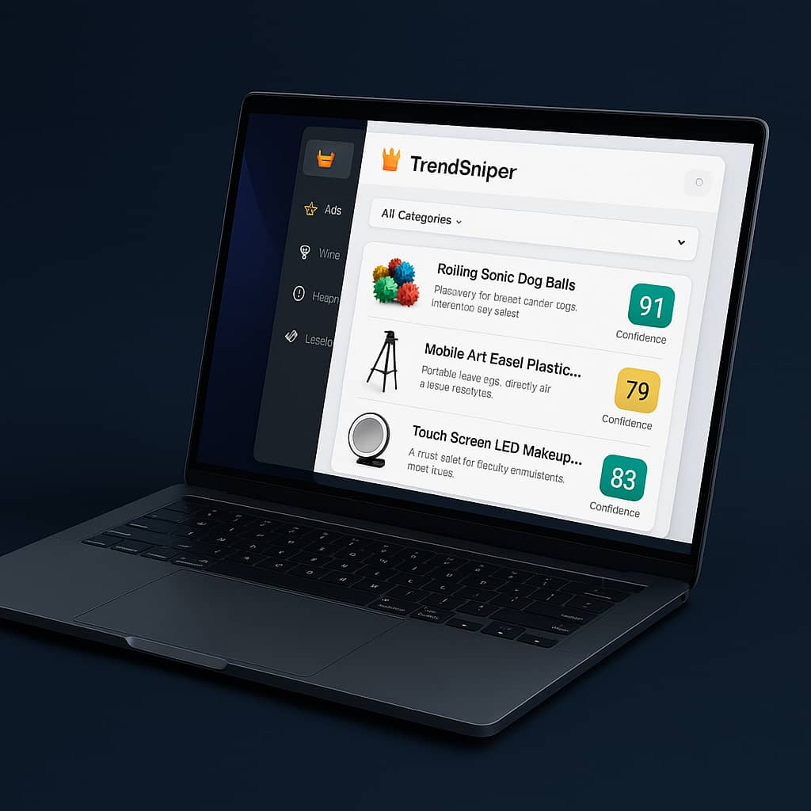

Stop guessing. Start scaling. Supercharge your product research with AI-driven analysis.
Identify top ads in seconds with AI analysis.
See real product images from top platforms.
Save & revisit winning products & ads.
"TrendSniper found 4.3 viral products in a week!"
"Simple, powerful, saves me hours. Best $9.99 ever!"
"Tired of wasting money on spy tools. TrendSniper just works."
$7/month
$19/month
Every 24 hours!
Yes, anytime. No contracts.
No! TrendSniper is beginner-friendly.